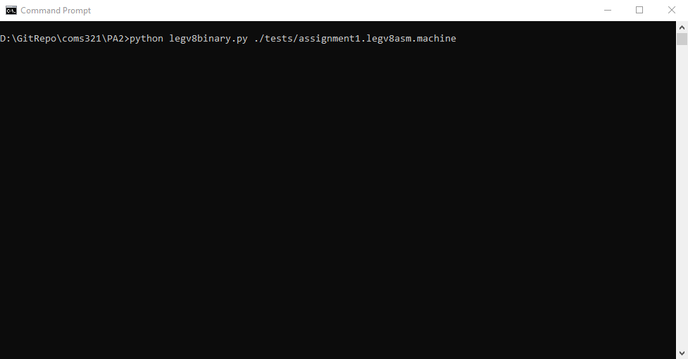
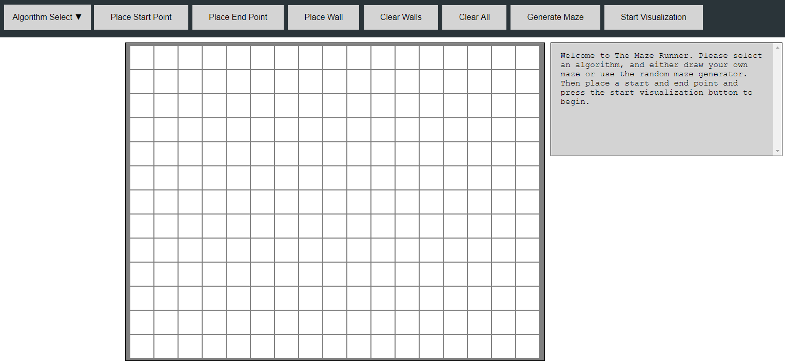
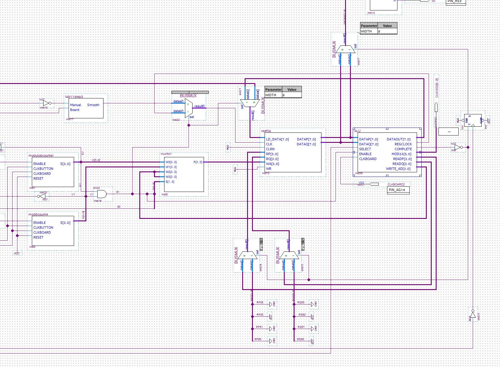
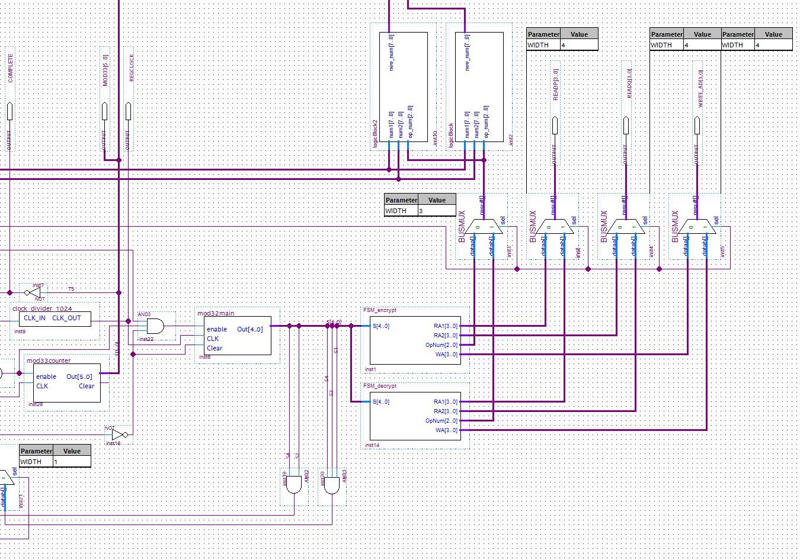
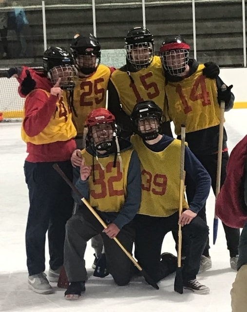

Max Van de Wille
Software Engineering student at Iowa State University graduating in December 2021. Previous internship experience in front-end development, embedded robotics solutions, and computer vision. Former Project Manager and Undergraduate Advisor for MADS-B, a student organization sponsored by Collins Aerospace. Current Software Engineering Intern at Curiosity Labs Inc., seeking opportunities for 2021 summer internships.
Experience
Software Engineering Intern
Student Computer Support Specialist
Software & Web Development Intern
Programming & Software Development Intern
Technical Support Intern
Education
Iowa State University
Coursework: Object-Oriented Programming, Data Structures, Digital Logic, Database Management Systems, User Interfaces, Algorithms
GPA: 3.34
Campus Organizations:
MADS-B – A Collins Aerospace sponsored student organization dedicated to creating ADS-B solutions for drones and other small unmanned aerial systems. Project focus included creating a transmitter and receiver able to correctly encode and decode ADS-B messages, and using those decoded messages to determine if a collision is imminent to calculate evasive maneuvers. Served as Project Member, Team Lead, Project Lead, and Undergraduate Advisor over a span of six semesters.
Engineering Career Fair Executive Team – A student-led organization working alongside Engineering Career Services to plan and execute one of the largest engineering-focused career fairs in the nation. Served as a member of the Personnel Subcommittee for two semesters, overseeing recruitment, training, and development of over 300 volunteers to provide service rated 9.36/10.
Skills
- Familiar with Agile Development & Scrum
- Cross-platform development experience
- Team-oriented experience (including cross-functional teams)
- Comfortable with front and back end development
Projects
FoodBuddy
Description: A mobile application (iOS) where you can create a user, track your nutrition by scanning nutrition labels on food, and connect with other users through a global chat and status feed. Uses optical character recognition and custom string parsing to locate and track statistics like calories, protein, and more. User data is hashed using SHA512 and stored in a Mongo database on a server hosted by the Computer Science department at ISU.
Currently being developed is the global chat using websockets to connect users to one or many chat-rooms where they can instantly message other users in the room. Also in development is the OCR scanning, currently the application has full access to the camera and can save images but we have not completed OCR scanning and are at work on an algorithm to process the OCR's output. Finally, some UI alterations will be made for a more cohesive experience.
Python Binary Decoder
Part of a collaboration with Sam Massey as part of a COM S 321 assignment.
Demonstration of decoding a short LEGv8 machine file

Decoding of a slightly longer LEGv8 machine file
MADS-B Autopilot & Transmitter
Maze Runner
Part of a collaboration with Benjamin Bradley for our SE 319 Final Project. My role in the team was developing the backend logic for maze generation and pathfinding using a 2D array of custom Cell objects synchronized in real time with a grid of clickable HTML divs acting as cells for the user to place walls, start, and end points.
USE THE APP HERE (Interface not optimzed for all screen sizes) 
Visualization of the A* pathfinding algorithm using Maze Runner
Demonstration of user-placed walls and the Sample pathfinding algorithm
Engineering Career Fair Ambassador Check-IN
Tiny Encryption Algorithm Encoder/Decoder
The program was created in Altera Quartus Prime software using logic circuits, or circuits that consist of only wires and logic gates such as AND, OR, and NOT gates. The project stipulated that the circuit must contain a register file capable of storing ten 8-bit values and a "magic value" necessary for the tiny encryption algorithm. Additionally, this register file should only have two read ports, which can be used to access two registers at one time, limiting how many values can be used in one calculation. Rather than use an additional register file, I opted to create an arithmetic and logic unit (ALU) that broke down the tiny encryption algorithm into single steps and would use registers 7-10 as temporary registers to cycle result values for later processing. For example, the ALU would take registers 1 and 2 and multiply their values, storing the result into register 7. Register 7 would then be used during the next step, and so on.
The program would be operated using the switches on the FPGA board, which would allow the user to load 8 bits at a time of either the 32-bit key or the 16-bit value using switches 0-7. Switch 8 acted as a toggle, dictating whether or not the bits were key or value bits, and switch 9 acted as a toggle to dictate whether the program would encode or decode. Not picture in the below images is a button that would be used to "Enter" the bits currently turned on by the switches.

Demonstration showing decoding of hexadecimal value 2810 (or 0010 1000 0001 0000 in binary) with hexadecimal key B3BEEF75. Expected encrypted value is 4C37, displayed here two bytes at a time, i.e. 4C will display first, then 37 will display after a press of a button.

Overhead view of complete assembly with the exception of the control circuit

Overhead view of the arithmetic and logic unit (ALU)
Interests
My programming interests particularly include autonomous vehicles, aircraft and drone avionics, and primarily autonomous drone flight using camera detection and transceivers to locate potential threats and divert flight path accordingly. Recently I have been starting to do more application development, using Swift for iOS applications and I have been enjoying that a lot.
Outside of programming, I am a huge ice hockey fan and player and love to take part in intramurals here at Iowa State.
Me in 2013 playing defense for the San Diego Ice Arena Oilers

Some friends and I winning ISU's broomball intramural in Fall 2018. I am on the right, wearing #14